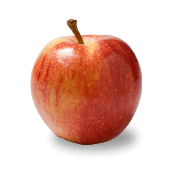

Fruit
Any fruit or 100% fruit juice counts as part of the Fruit Group. Fruits may be fresh, canned, frozen, or dried, and may be whole, cut-up, or pureed.
More InfoAbout the Fruit Group
In general, 1 cup of fruit or 100% fruit juice, or ½ cup of dried fruit can be considered as 1 cup from the Fruit Group. This table below shows specific amounts that count as 1 cup of fruit (in some cases equivalents for ½ cup are also shown) towards your daily recommended intake.